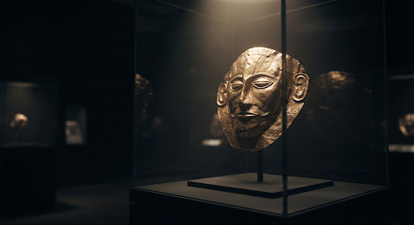

Terms of Use & Digital Heritage Ethics
Welcome to our platform, a digital space dedicated to showcasing and preserving the rich heritage and archaeological treasures of Egypt. By accessing or using this website, you agree to comply with the following terms and ethical guidelines.
Purpose of the Website
The Ancient Heritage platform exists as a non-profit educational initiative dedicated to the digital preservation of antiquities. Our primary objective is to promote global awareness and facilitate scholarly access to historical records that may be physically inaccessible or at risk.
-
Fostering academic research and providing educational resources for public enrichment.
-
Increasing visibility for cultural heritage through high-fidelity digital surrogates.
Intellectual Property & Copyright
All digital content, including but not limited to 3D models, photogrammetry data, textual metadata, and specialized site architecture, are the protected Intellectual Property of the Ancient Heritage Collective.
-
Users may not redistribute, sell, or commercially exploit any archive assets without written curatorial license.
-
The "Fair Use" doctrine applies to educational citations, provided the Archive is properly credited.

Preservation Protocol
Honoring the past, securing the future.
Digital Preservation Ethics
We are committed to the historical accuracy and respectful representation of all artifacts. Digital restoration is performed only when scholarly evidence supports the intervention.
The digital surrogate must maintain the cultural lineage and spiritual integrity of the original antiquity.
Misrepresenting historical facts or intentionally distorting digital models for political or commercial gain is considered a severe ethical breach.
Provenance Ethics
Transparency regarding the origin and chain of custody of artifacts is paramount. We strive to respect the sources and acknowledge the sovereign heritage of nations from which these objects originate.
Transparency
Full disclosure of archival records and collection history whenever possible.
Cultural Respect
Engagement with source communities regarding the sensitive display of sacred objects.
User Responsibility
By entering the Archive, users accept the responsibility of principled engagement.
This includes maintaining academic
integrity in discussions and respecting the intellectual labor of the curatorial team.
Users must not attempt to bypass security measures or access restricted metadata silos designated
for institutional research only.
Updates to Terms
We reserve the right to update these terms as needed to reflect changes in digital preservation standards or legal requirements. Continued use of the site following any changes constitutes acceptance of the new terms.